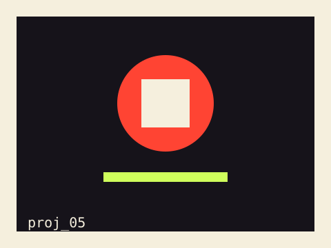

Live Performance →

An original AI-themed stage play about an AI diplomat's choice — staged with AI-generated music and visuals.
Eligere — Latin for "to choose" — is an original stage play performed by our four-person team in Fall 2024. Set in 2050, as nations race to secure carbon credits, South Korea sends an AI diplomat, Eligere, to negotiate in a human diplomat's place. Through their exchange, the play stages a choice between cold logic and human empathy, built around AI-generated music (composed with Suno) and AI-generated visuals woven directly into the live staging.
Story planning, acting, and set design, as one of four team members. Helped shape the plot and character arcs, performed on stage, and designed the physical set for an immersive-hall performance, alongside teammates handling composition, sound, and lighting.